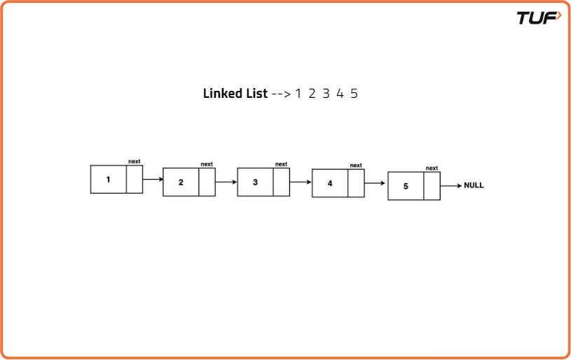
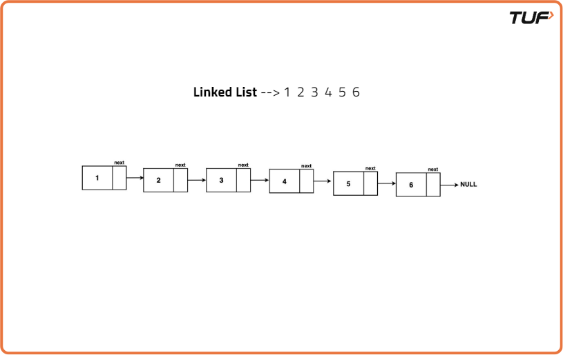
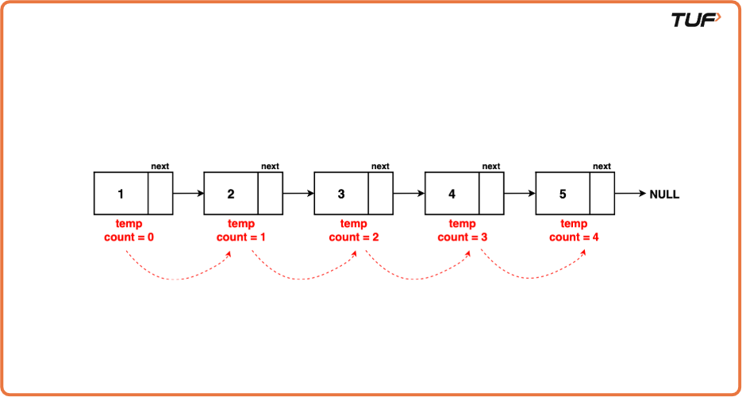
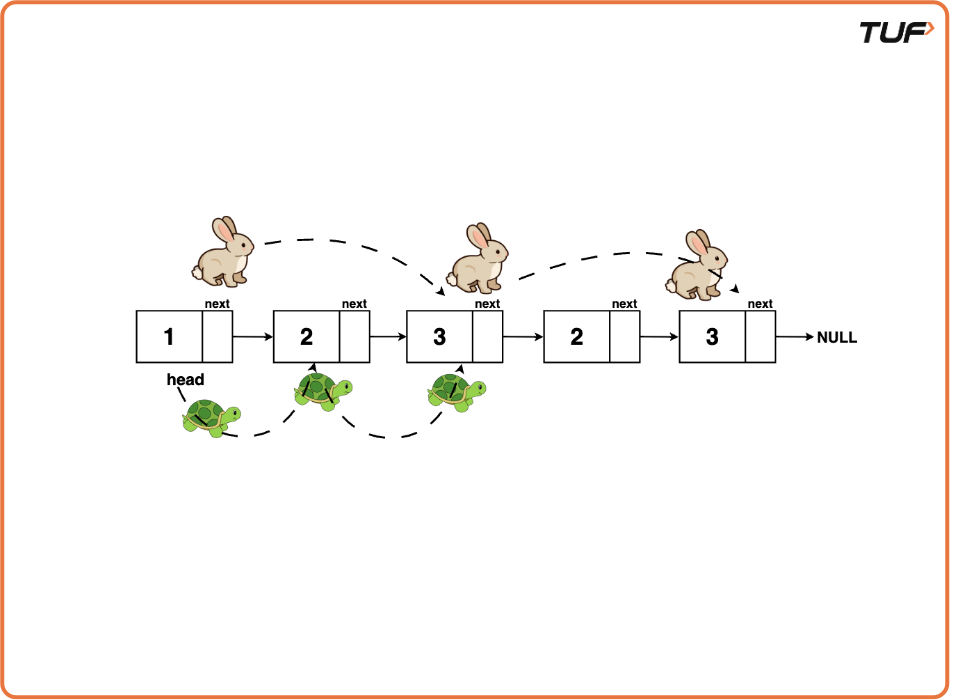
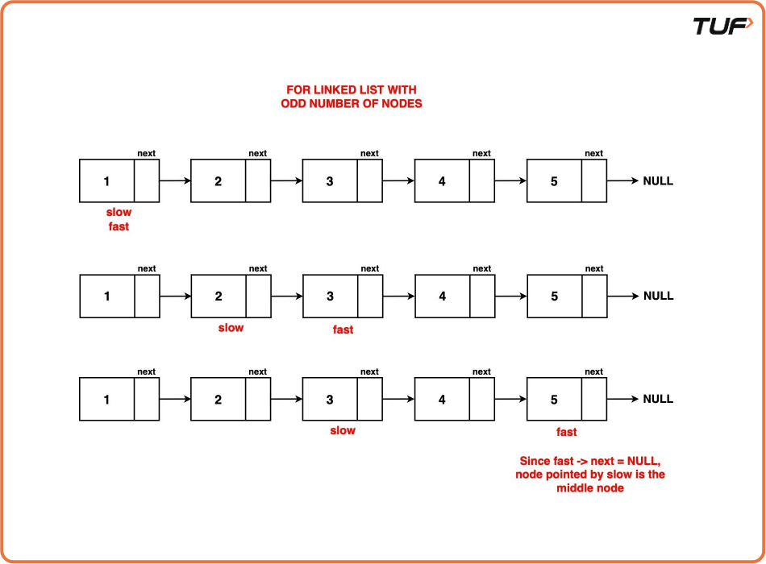
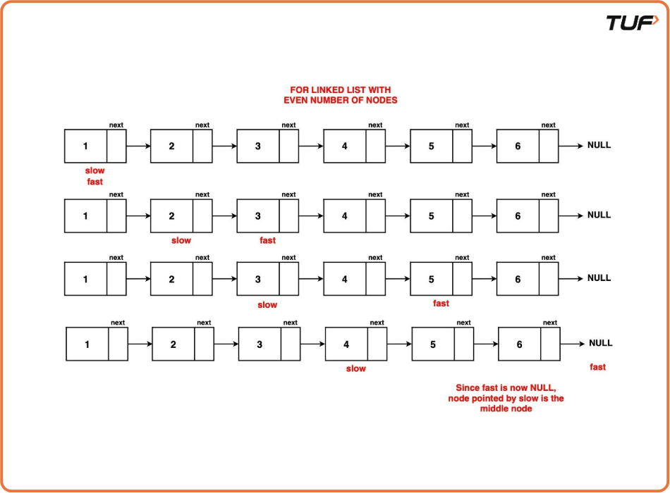

Find middle element in a Linked List
Problem Statement: Given the head of a linked list of integers, determine the middle node of the linked list. However, if the linked list has an even number of nodes, return the second middle node.
Examples
Example 1:
Input: LL: 1 2 3 4 5

Output: 3
Explanation: Node with value 3 is the middle node of this linked list.
Example 2:
Input: LL: 1 2 3 4 5 6

Output: 4
Explanation: In this example, the linked list has an even number of nodes hence we return the second middle node which is 4.

Disclaimer: Here is the practice link to help you assess your knowledge better. It's highly recommend trying to solve it before looking at the solution.
Brute Force Approach
Algorithm
Using the brute force approach, we can find the middle node of a linked list by traversing the linked list and finding the total number of nodes as `count`. Then we reset the traversal pointer and traverse to the node at the [count/2 + 1]th position. That will be the middle node.
Algorithm:
Step 1: Initialise pointer temp to the head of the linked list and a variable to count to hold the number of nodes in the linked list. Using temp traverse the linked list, increasing the value of count by one at each node till temp becomes null. The final value of count will represent the length of the linked list.
Step 2: Calculate mid as count/2 + 1 where count is the length of the linked list. Mid represents the position of the middle node.
Step 3: Reset temp pointer back to the head and traverse the list by iteratively moving temp mid number of times. The node pointed to by current after this traversal is the middle node of the linked list.

Code
#include <iostream>
#include <bits/stdc++.h>
using namespace std;
// Node class represents a node in a linked list
class Node {
public:
// Data stored in the node
int data;
// Pointer to the next node in the list
Node* next;
// Constructor with both data
// and next node as parameters
Node(int data1, Node* next1) {
data = data1;
next = next1;
}
// Constructor with only data as
// a parameter, sets next to nullptr
Node(int data1) {
data = data1;
next = nullptr;
}
};
// Function to find the middle
// node of a linked list
Node *findMiddle(Node *head) {
// If the list is empty or has only
// one element, return the head as
// it's the middle.
if (head == NULL || head->next == NULL) {
return head;
}
Node* temp = head;
int count = 0;
// Count the number of nodes in the linked list.
while (temp != NULL) {
count++;
temp = temp->next;
}
// Calculate the position of the middle node.
int mid = count / 2 + 1;
temp = head;
// Traverse to the middle node by moving
// temp to the middle position.
while (temp != null) {
mid = mid - 1;
// Check if the middle
// position is reached.
if (mid == 0){
// break out of the loop
// to return temp
break;
}
// Move temp ahead
temp = temp->next;
}
// Return the middle node.
return temp;
}
int main() {
// Creating a sample linked list:
Node* head = new Node(1);
head->next = new Node(2);
head->next->next = new Node(3);
head->next->next->next = new Node(4);
head->next->next->next->next = new Node(5);
// Find the middle node
Node* middleNode = findMiddle(head);
// Display the value of the middle node
cout << "The middle node value is: " << middleNode->data << endl;
return 0;
}
Output: The middle node value is: 3
Complexity Analysis
Time Complexity: O(N+N/2) The code traverses the entire linked list once and half times and then only half in the second iteration, first to count the number of nodes then then again to get to the middle node. Therefore, the time complexity is linear, O(N + N/2) ~ O(N).
Space Complexity : O(1) There is constant space complexity because it uses a constant amount of extra space regardless of the size of the linked list. We only use a few variables to keep track of the middle position and traverse the list, and the memory required for these variables does not depend on the size of the list.
Optimal Approach
Algorithm
The previous method requires the traversal of the linked list twice. To enhance efficiency, the Tortoise and Hare Algorithm is introduced as an optimization where the middle node can be found in just one traversal.
The Tortoise and Hare algorithm leverages two pointers, 'slow' and 'fast', initiated at the beginning of the linked list. The 'slow' pointer advances one node at a time, while the 'fast' pointer moves two nodes at a time.

The Tortoise and Hare algorithm works because the fast-moving hare reaches the end of the list in exactly the same time it takes for the slow-moving tortoise to reach the middle. When the hare reaches the end, the tortoise is guaranteed to be at the middle of the list.
Algorithm
Step 1: Initialise two pointers, `slow` and `fast`, to the head of the linked list. `slow` will advance one step at a time, while `fast` will advance two steps at a time. These pointers will move simultaneously.
Step 2: Traverse the linked list with the `slow` and `fast` pointers. While traversing, repeatedly move `slow` one step and `fast` two steps at a time.
Step 3: Continue this traversal until fast reaches the end of the list (i.e., fast or fast.next is null), the slow pointer will be at the middle of the list.

When the linked list has an odd number of nodes, fast.next ensures that the fast pointer doesn't go past the end of the list. In this case, fast reaches the last node, and fast.next becomes null, signalling the end of the traversal.

When the linked list has an even number of nodes, fast will reach the end of the list and be null, which still signifies the end of the traversal.
Code
#include <iostream>
#include <bits/stdc++.h>
using namespace std;
// Node class represents a node in a linked list
class Node {
public:
// Data stored in the node
int data;
// Pointer to the next node in the list
Node* next;
// Constructor with both data
// and next node as parameters
Node(int data1, Node* next1) {
data = data1;
next = next1;
}
// Constructor with only data as
// a parameter, sets next to nullptr
Node(int data1) {
data = data1;
next = nullptr;
}
};
// Function to find the middle
// node of a linked list
Node *findMiddle(Node *head) {
// Initialize the slow pointer to the head.
Node *slow = head;
// Initialize the fast pointer to the head.
Node *fast = head;
// Traverse the linked list using the
// Tortoise and Hare algorithm.
while (fast != NULL && fast->next != NULL) {
// Move slow one step.
slow = slow->next;
// Move fast two steps.
fast = fast->next->next;
}
// Return the slow pointer,
// which is now at the middle node.
return slow;
}
int main() {
// Creating a sample linked list:
Node* head = new Node(1);
head->next = new Node(2);
head->next->next = new Node(3);
head->next->next->next = new Node(4);
head->next->next->next->next = new Node(5);
// Find the middle node
Node* middleNode = findMiddle(head);
// Display the value of the middle node
cout << "The middle node value is: " << middleNode->data << endl;
return 0;
}
Output: The middle node value is: 3
Complexity Analysis
Time Complexity: O(N/2) The algorithm requires the 'fast' pointer to reach the end of the list which it does after approximately N/2 iterations (where N is the total number of nodes). Therefore, the maximum number of iterations needed to find the middle node is proportional to the number of nodes in the list, making the time complexity linear, or O(N/2) ~ O(N).
Space Complexity : O(1) There is constant space complexity because it uses a constant amount of extra space regardless of the size of the linked list. We only use a few variables to keep track of the middle position and traverse the list, and the memory required for these variables does not depend on the size of the list.